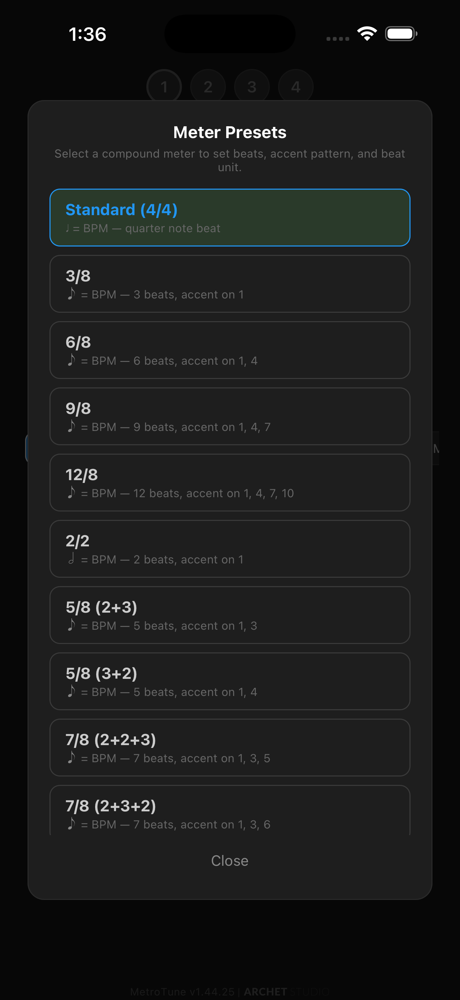
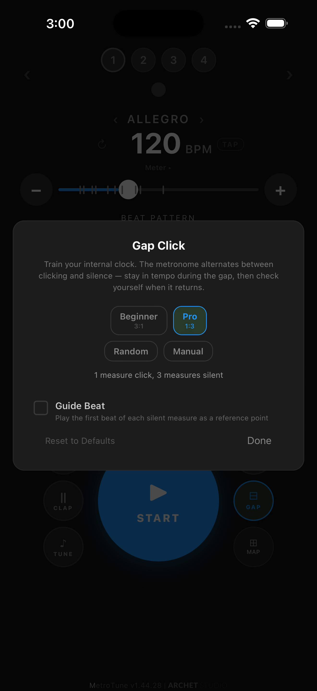

User Guide
MetroTune™
Everything you need to get the most out of MetroTune — metronome, chromatic tuner, and scale trainer.
Work in progress
This guide is being actively built — some sections are placeholders while we fill in details, screenshots, and videos.
Getting Started
Open MetroTune and tap START — the metronome plays immediately at 120 BPM in 4/4. No account, no setup, no permissions required.
Three views are one tap apart: Metronome, Tuner, and Score View. They share the same sounds, themes, and settings.

Tap TUNE (bottom left) to open the Tuner.

Tap SCALE and configure a scale pattern, then tap SCORE up top to open Score View.

Real notation with clefs, key signature, and accidentals. Tap TUNER to return.
Contextual navigation. The buttons around the big START circle change based on the current view — they're always the next tap away. From the Tuner, for example, METRO takes you back to the Metronome, and SCALE toggles scale mode on.
Metronome
Tap the big START circle to play, again to stop. Everything else on this screen — tempo, time signature, beat pattern, sound — adjusts the metronome before or while it plays. For multi-step practice (different tempos and meters in sequence), the MAP button at the bottom-right opens Tempo Map.
On this page
The basics
Time signature and sound
Time signature. A time signature is two numbers: the top tells you how many beats are in each measure; the bottom tells you the note value of each beat (4 = quarter notes, 8 = eighth notes).
Number of beats (top number). Tap the chevrons (‹ / ›) on either side of the beat indicators to add or remove beats. Whatever you set here becomes the numerator of the time signature shown later in Score View.
- •2 beats → 2/4 (march)
- •3 beats → 3/4 (waltz)
- •4 beats → 4/4 (common time)
- •5 beats → 5/4 (irregular — Holst’s Mars, Brubeck’s Take Five)
- •6 beats → 6/4 or 6/8 depending on the Meter setting
- •7+ beats → 7/4, 7/8, 9/8, 12/8… for odd or compound meters
Beat unit (bottom number). Tap the Meter row to switch between quarter-note (4) and eighth-note (8) beats. Compound meters — 6/8, 7/8, 9/8, 12/8 — are accessible from here.
Sound. Choose from 17 sound profiles including Click, Wood, Hi-Hat, Beep, Keyboard, and more. See the Sound profiles card below for the full picture.
Tempo
Setting tempo
Three ways to dial in BPM, each suited to a different need:
- •Left / right arrows (+ / −) — nudge tempo by 1 BPM at a time. Best for fine adjustments while playing.
- •Horizontal slider — drag the white dot for broad changes across the full BPM range.
- •TAP button — tap repeatedly in time with the music; the metronome averages the interval and locks to that tempo.
The Italian tempo marking (Largo, Adagio, Andante, Moderato, Allegro, Presto, Prestissimo…) above the BPM updates automatically as you change tempo.
Recent tempos
The tick marks on the slider track are your recent tempos — every BPM you’ve used since opening the app. Tap any tick to jump back to that tempo in one move.
It works across all three input methods. Drag the slider to a fresh BPM, nudge with + / −, set a tempo with TAP — each becomes a tick mark you can return to without retyping or re-tapping.
Recent configurations
Tap the circular icon next to the BPM to open a row of pills below it — your recent setups. Each pill captures the full metronome state (tempo, sound profile, beat pattern, accents, meter) so you can return to a configuration you used earlier without rebuilding it.
When you've used the same tempo with different setups, a letter suffix distinguishes them — 120, 120a, 120b, etc. Tap any pill to recall that exact configuration.
Video condensed — empty space between the controls and the START button has been removed to keep both in frame.
Multi-step tempo sequences
When practice calls for tempo ramps, mixed-meter pieces, or any sequence where the metronome needs to change at fixed intervals, tap the MAP button at the bottom-right to open Tempo Map. Each step is a full metronome configuration — tempo, time signature, beat pattern, sound, measures — that plays for a set number of bars before advancing to the next. The Tempo Step option also lets you auto-increment BPM by a fixed amount or percentage as you add patterns.
Meter
Meter presets
Tap the Meter ▾ button under the BPM to open a list of compound and irregular meters. Each preset configures the beat unit, number of beats, and accent pattern in one move.
- •6/8 — 6 eighth-note beats, accents on 1 and 4 (compound duple).
- •7/8 (2+2+3) vs 7/8 (2+3+2) — same 7 eighth-note beats, different grouping shifts which beats get the accent.
- •5/8 (2+3) vs 5/8 (3+2) — same total beats, different accent placement.
- •2/2, 9/8, 12/8, 3/8 — classical compound meters, each with its standard accent pattern.
Use the preset to set up the click pattern, then change just the tempo — the meter and accents stay consistent through tempo changes.

Beat unit, in depth
Beat unit is the bottom number of the time signature — quarter (4), eighth (8), or half (2). It changes more than the label suggests.
- •What “BPM” refers to depends on it. In 4/4, 120 BPM means 120 quarter notes per minute. In 6/8, 120 BPM means 120 eighth notes per minute — a denser pulse for the same number. In 2/2 (cut time), it’s half notes. The same BPM can feel very different across meters.
- •Some beat patterns aren’t available in every meter. When the beat unit is already an eighth (6/8, 9/8, 12/8), denser patterns — sixteenths, quintuplets, sextuplets, 32nds — are hidden from the picker. They’d produce 32nd-level density against the underlying quarter-note pulse, unreadable in practice. Switch back to a quarter-unit meter and they reappear.
- •Meter switches reset the beat pattern. If you had sixteenths selected in 4/4 and switched to 6/8 (where sixteenths aren’t available), the pattern would land in an undefined state. So the app always resets to the “quarter” pattern after a meter change — pick a denser pattern again if the new meter supports it.
Sound
Sound profiles
MetroTune offers 17 sound profiles. Tap any tile in the Sound row to switch; scroll right for more.
Most are drum-kit and pitched timbres — Click, Beep, Hi-Hat, Snap, Cowbell, Rimshot, Kick, Wood, Bamboo, Marimba, Rosewood, Keyboard, and more. Every profile is synthesized from scratch (no recorded samples), so each has its own attack character. Accents are reinforced through pitch shifts, brighter transients, and slightly longer decay rather than pure loudness — they stay recognizable even at low volume.
Muted is the one special profile — selecting it silences audio and triggers Silent Practice mode. The screen collapses to a single beat flash; everything else is hidden for distraction-free practice.
Across all profiles, MetroTune keeps the overall loudness consistent — switching from Hi-Hat to Beep to Marimba changes the timbre, not how loud the metronome is.
Voice counting is a separate toggle, not a sound profile. Look for the round button in the top-right of the bottom button cluster — it shows OFF when voice is disabled and switches to VOICE with a green highlight when enabled. Tap to toggle it, and the metronome speaks the beat numbers aloud (“1, 2, 3, 4”…). Useful for counting drills or when a click is hard to hear over your instrument.
Beat Pattern
Beat Pattern
Choose a subdivision shape — quarters, duplets, triplets, sixteenths, quintuplets, sextuplets, or 32nds — then shape the click with two interactions:
- •Tap a beat circle (the numbered “1, 2, 3, 4” row at the top) to accent it. The first subdivision of an accented beat plays louder or with a different timbre.
- •Tap a subdivision dot (the smaller dots beneath each beat) to mute just that subdivision. Combine mutes across beats to build asymmetric grooves — e.g. a triplet pattern with the middle subdivision silenced (“tah…tah”), or sixteenths with positions 2 and 4 muted for syncopation.
Video condensed — empty space between the controls and the START button has been removed to keep both in frame.
Heads-up — accent gotcha
If the first subdivision of a beat is muted, the accent on that beat won’t be heard. The accent rides on the first subdivision; mute it, and the accent goes silent with it. If you want the accent to land, leave the first subdivision sounding and mute later subdivisions instead.
Muted subdivision dots stay outlined as the metronome ticks past them; sounding ones light up. Pattern shown: sextuplets (6 subdivisions per beat) with selective mutes across each beat. Video condensed to keep both controls and START button in frame.
Gap Click
Gap Click — train your internal clock
Most metronomes click on every beat forever. Gap Click alternates clicking measures with silent measures — you have to hold tempo through the silence. When the click returns, you hear instantly whether you drifted ahead or behind. The gap exposes timing drift instead of letting the click mask it.
This isn’t a novelty mode. Silent-bar practice is a long-standing pedagogical tool in jazz, classical, and drum education — Wilcoxon’s drum books, Tommy Igoe’s drills, and countless jazz teachers have used it to build students’ internal pulse: the ability to keep tempo without external reference.
Visual feedback during silence. When the metronome enters a silent stretch, a rotating-border GAP Active indicator appears in the status strip — so you know the silence is intentional, not a glitch.
Pro mode (1:3) running. The first measure clicks; the next three are silent with the rotating GAP Active indicator above the tempo. Empty space between controls and START removed for framing.
Tip — quick toggle
The GAP button is dual-purpose. A short tap toggles the last-used mode on or off. A long-press (~1 second) opens the configuration modal. First-time users with no previous setup — a tap opens the modal too.
The four modes
Each mode controls the click-to-silent ratio differently. They scale from beginner-friendly to demanding.
- •Beginner — 3:1. Three click bars, one silent bar. Plenty of click reinforcement; one silent bar is enough to test without getting lost. Start here if you’ve never done gap practice.
- •Pro — 1:3. One click bar, three silent. One bar to lock in the tempo, three bars to hold it without help. Demanding — most musicians struggle here at first. Transformational after a week.
- •Random (premium) — coin flip per measure. The metronome decides per measure (and optionally per beat) whether to mute. You can’t anticipate the gap, so you have to stay locked in continuously.
- •Manual (premium) — custom 1–16 sound, 1–16 silent. Configure any ratio for specific drills: 1:7 for ballad-tempo work, 4:4 for symmetric subdivision exercises, etc.
Guide Beat option (premium). When enabled, the downbeat (beat 1) plays even during silent measures — gives you an anchor at the start of each silent bar so you don’t lose the form, while you stay responsible for beats 2, 3, 4. Use it as training wheels with Beginner or Pro; turn it off when you’re ready for full silence.

Try this — drills
- Beginner mode + scales. Run a major scale up and down across 4 measures — the 4th is silent. Keep the scale moving at the same tempo through the silence. When the click returns on the next downbeat, you’ll hear immediately if you sped up or slowed down. Builds awareness without high failure rate.
- Pro mode + a memorized passage. Click bar 1, you play bars 1–4. Devastating at first; transformational after a week. Most students discover they push the tempo when they’re not being clicked at.
- Random mode + improvisation. Improvise over a chord progression at a fixed tempo. The metronome randomly mutes 50% of measures. Trains you to hold time even when you can’t anticipate the click.
Tuner
Tone Profiles
Choose from five synthesized profiles — Tone, Clarinet, Organ, Brass, Bell — each built with the correct overtone series for that instrument family. The reference pitch sounds like your instrument, not a generic sine wave.
Guide Tone
Hold a note and the tuner plays it back as a sustained reference tone. Use Loop to repeat it while you match pitch. Lock the octave so the reference stays on the note you set even if your playing drifts to a different register.
Scale Trainer
Build a scale queue by selecting scales in any key. Set count-in beats, loop count, and gap between scales. Save the queue as a named profile and reload it the next day. 28 built-in templates cover Hanon, circle of fifths, arpeggios, and common drills — load any as a starting point, then customize.
Score View v1.41
Switch to Score View in the Scale Trainer to see a real music staff — clef, key signature, ledger lines, accidentals, rests — the same notation you'd read in a method book. Notes highlight in sequence as the metronome plays them. Use it alongside the metronome to read and keep time simultaneously.
Echo Mode v1.41
Echo Mode plays a note from your current scale, then listens through the microphone. Match the pitch within the tolerance window and the next note plays. Miss it and the app re-prompts, incrementing the attempt counter. Work through an entire scale as a call-and-response ear training session without switching apps.
Tempo Map
Build a multi-step metronome sequence. Each step is a full metronome configuration — its own tempo, time signature, beat pattern, sound, accents, and measure count — so you can move between fundamentally different feels (a driving 4/4 section into a swung 6/8 into a 3/4 waltz) without leaving the map. Steps play in order and loop if enabled. The Beethoven 9th, Mvt. 4 profile ships pre-loaded — six entries across shifting tempos and meters — so you can see how a real piece lays out before building your own.
Open the Tempo Map dialog from the MAP button at the bottom-right of the metronome screen.
Building a sequence
Tap + to add a new pattern. The Add Pattern dialog mirrors the main metronome screen — the same BPM slider, time-signature row, beat-pattern selection, and sound profile are all available per pattern. Patterns are independent, so any combination can change between rows: just the tempo, just the meter, just the sound, or all at once. The dialog opens with the previous row’s settings copied so you only adjust what differs.
- •Set Measures to choose how many bars play before advancing to the next pattern.
- •Each row has a Loop checkbox. Checked rows play on every loop pass; unchecked rows play only on the first pass through the map.
- •Tap the × on a row to remove it.
Adding patterns with Tempo Step set to +10% — each new pattern auto-increments BPM from the previous one.
Tempo Step — auto-incrementing tempo
Practicing a passage at progressively faster (or slower) tempos? Turn on Tempo Step and each new pattern you add will inherit the previous pattern’s settings with the BPM adjusted automatically. Three controls shape the step:
- •Direction — Up (faster) or Down (slower).
- •Mode — Fixed (a constant BPM amount) or Percent (a percentage of the previous tempo).
- •Amount — how much each new pattern shifts.
Example: Direction Up, Mode Percent, Amount +10%, starting at 120 BPM. Tapping + three times gives you 132, 145, 160. The Add Pattern dialog still opens at the calculated BPM, and you can override the BPM — or any other setting (meter, beat pattern, sound, measures) — before tapping Add.
Loop, Start From, Count-In
- •Loop — off plays the map once and stops. On, the first pass plays every row; subsequent passes only play rows with the Loop checkbox enabled.
- •Start From — long-press a row to set it as the starting point (default: Row 1). Useful when rehearsing a piece from a specific section.
- •Count-In Beats — beats played at the starting tempo before the map begins.
- •Allow Tempo Change to Update Profile — when on, changing BPM during playback updates the current pattern’s saved tempo.
Saving and loading profiles
The Tempo Map dialog has Save, Load, and New at the top. Save names the current map and stores it. Load reopens any saved profile. New clears the map to start over. The current profile name appears at the top-right (Untitled until you save).
Double-Clap Control
Enable Clap Control in settings. Two sharp claps in quick succession toggle playback on or off. Use it when your hands are busy — bow, drumsticks, keys — so you never have to reach for the screen mid-practice. Adjust sensitivity, background ratio, and timing window if detection is too eager or too slow in your room.
Themes & Languages
Theme — long-press to swap
MetroTune ships with 12 themes — six base color schemes plus six pastel variants. The theme applies app-wide: Metronome, Tuner, Scale Trainer, and Score View all use the same palette.
To change the theme without leaving the metronome screen, long-press the START/STOP button for about one second. A color palette pops up around the button.
- •Tap any color to switch the theme instantly.
- •Tap outside the popup to cancel without changing.
Languages
MetroTune is available in 14 interface languages: English, German, Spanish (Spain & Mexico), French, Indonesian, Italian, Japanese, Korean, Portuguese (Brazil & Portugal), Thai, Turkish, and Vietnamese.
The app follows your device locale automatically — open MetroTune on a phone set to Korean and you’ll see the Korean interface. Override the choice in Settings if you want a language different from your device default.
Music terminology may stay in its conventional form. Some well-known music terms keep their universal form across all languages because musicians worldwide recognize them at a glance — Italian tempo markings (Largo, Adagio, Andante, Allegro, Presto…) are the most common example. Translating them risks losing meaning that’s already shared across the music world.
Have a question not covered here?
Visit the support & FAQ page →